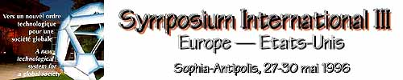

L'Invitation de / Invitations by
Jacques LEVY, Président de la Conférence des Grandes
Ecoles
Patrick HOLMES, President of the Conference of European Schools for Advanced
Engineering Education and Research
Chang LIN TIEN, Chancellor of the University of California, Berkeley
Charles VEST, President of Massachusetts Institute of Technology
COMITE SCIENTIFIQUE / SCIENTIFIC COMMITTEE
CONFERENCE DES GRANDES ECOLES
Bernard SUTTER : Ingénieur général des
Télécommunications
Conseiller auprès du Président
Jean-Pierre CHEVILLOT : Conseiller à la DG XII - Commission
Européenne
Gilbert FRADE : Directeur adjoint de l'Ecole des Mines de Paris
Pierre CONRUYT : Délégué
Général de France
Télécom à Sophia-Antipolis
CESAER : Conference of European Schools for Advanced Education and
Research
Philippe D. GROSJEAN : Secrétaire général
UCB : University of California, Berkeley
Richard BUXBAUM : Dean of International and Area Studies
Bernard SADOULET : Director, Center for Particle and
Astrophysics
MIT : Massachusetts Institute of Technology
Philipp L. CLAY : Associate Provost
David LITSTER : Vice-President and Dean for Research
Pour avoir des informations sur le Symposium -- en Français ou
en Anglais --, envoyez un courrier électronique à / For
inquiries about the Symposium -- in English or French -- send email
to: Jack Kessler at kessler@well.sf.ca.us or Jean -
Pierre Tubach at tubach@ds.enst.fr
or M. Bernard Sutter at sutter@paris.ensmp.fr.